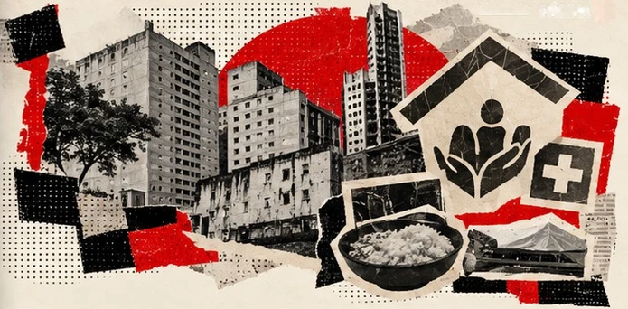
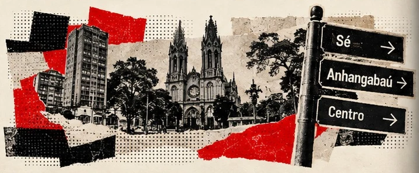
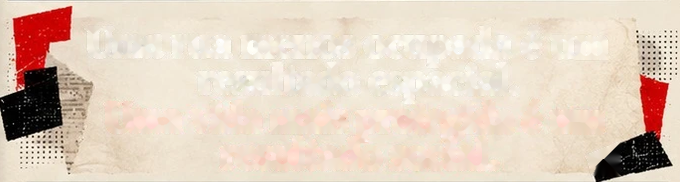

SOB EFEITO
PÁGINA 10
TIRAR DA VISTA É RESOLVER?
POR QUE FREQUENTAR A CENA? — LECUCA 2024
Facilidade de acesso
à droga
Menor preço
34,3%Acesso a serviços
de saúde
Local considerado
mais seguro para usar
Anonimato
13,6%Alimentação / moradia
12,1%As pessoas podiam indicar mais de um motivo. Esses percentuais não são categorias exclusivas.
O TERRITÓRIO CONCENTRA PROBLEMAS E RECURSOS
Preço e drogas aparecem ao lado de saúde, segurança percebida,
alimentação e moradia. Isso não demonstra que os serviços criaram
a cena: também mostra que pessoas vulneráveis procuram locais onde
conseguem algum apoio. Dispersar sem preservar vínculos pode afastar
pessoas da rede de cuidado.
INFÂNCIAS: ESTAR PERTO NÃO SIGNIFICA CONSEGUIR ESCUTAR
Em 2017, a Visão Mundial analisou um recorte de 22 crianças
e adolescentes de 3 a 17 anos em situação de rua no centro de São Paulo.
Houve brincadeiras e interação na Sé e no Anhangabaú, mas não foi
possível realizar essa interação dentro do fluxo da Cracolândia. O estudo
revela uma limitação de acesso e escuta, não a prevalência de uso
entre crianças do Brasil.
Uma rua menos ocupada é um resultado espacial. Uma vida mais protegida é um resultado social.